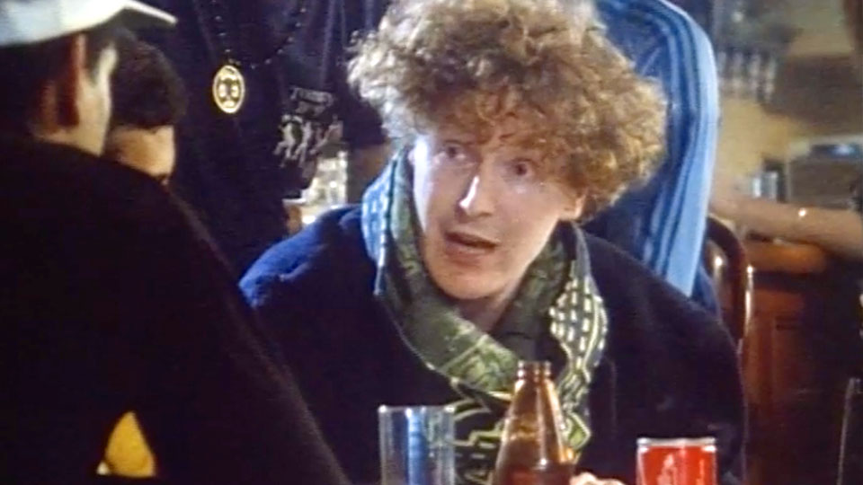

Poems disguised as television
Feature - Paul Fillingham, May 2025
In the ever-evolving digital age, the intersection of art and technology has redefined how creators share their work and reach audiences.
This transformation was never just a passing fad - it was a revolution, and Alan Yentob was one of its great proponents.
Space exploration
Back in 2012, Yentob described The Space - a project which shaped my understanding of digital media - as a platform supporting artists and organisations engaging with new audiences.
The project became a digital touchpoint in my own creative journey - overcoming a minor stroke - establishing Thinkamigo - and collaborating for the first time with writer and educator James Walker. It was a moment that echoed the spirit of innovation Yentob brought to British arts broadcasting throughout his career.

RIP arts editor Alan Yentob
Today I learned that Alan Yentob has died, aged 78. As an editor, broadcaster and director, Yentob was both advocate and catalyst for the arts, responsible for some of the most innovative television of the past half-century. To list all his arts programming achievements would be like trying to map the entire internet on a napkin. So, I'll focus on a couple of personal connections - those digital and analog touchpoints that shaped my own journey.
I first met Yentob in 2012 at the Royal Festival Hall, alongside music producer Don Letts and author Will Self, at the official launch of The Space - the experimental, on-demand arts platform co-funded by the BBC and Arts Council England for the Cultural Olympiad.
Our digital literature project, The Sillitoe Trail, found a home there, bringing together over seventy creative practitioners from Nottinghamshire to explore the region's cultural identity, just as Alan Sillitoe had done with Saturday Night and Sunday Morning.
Arts television in 1978

But my connection to Yentob goes back much further. Once upon a time in 1978, I was an art student growing up in Robin Hood county, where the trees were green with possibility, the coal mines dark and foreboding, and the art schools full of bright young things, paper, charcoal and life models.
At art school I was prolific, painting, drawing and studying art history - not old masters, but contemporary artists - the more contemporary and contrary, the better. Local libraries offered a few books about modern artists, and contemporary practitioners were covered in magazines like Art International and Artscribe. The latter being styled more like a fanzine than an arts publication.
There was always a tradition of arts programming on British television. But with a few exceptions - Ken Russell's Pop Goes the Easel and the occasional Southbank Show hosted by Melvyn Bragg - these programmes were largely highbrow and rather dismissive of popular culture.
BBC2 was the innovator at the time, and aired Arena, an arts magazine programme that had just been handed over to its new editor - Alan Yentob. During Yentob's time as editor, Arena received six BAFTA nominations and three BAFTA awards.

Capturing the extraordinary
Now, if we think of television as a kind of information network composed of links and signals with various jumping-off points - it becomes part of the creative process itself. Arena didn't just show art; it became a landscape of language and images, of clever jump-cuts, animation, collage and reconstructions. It also provided a space for student film makers to shine. People like David Wheatley whose film about René Magritte faithfully captured the mysterious world evoked by the artist's Surrealist paintings.
Magritte's bowler hats floated like clouds on our family's TV screen with the suggestion that the ordinary world could be gently rearranged, as if the laws of physics had taken the night off. It was a place populated by charismatic art collectors like George Melly - riffing like a jazz musician should. Arena programmes like The Private Life of the Ford Cortina, broadcast in 1982 were like the essays of the French semiotician Roland Barthes - required reading in the field of sociology - who investigated the popular iconography of the everyday and the banal.
In 1978, VCR's were still a couple of years off - at least for the domestic market - we had them at school of course - chunky Philips N1502 machines that recorded 60 minutes of black and white video and were used to playback the early years sex education programme Living and Growing, thus avoiding all the embarrassment experienced by our long suffering biology teachers.
Being resourceful, I recorded the Arena programme on a portable cassette recorder, snapped black-and-white stills with my Soviet-made 35mm Zenith-e camera - capturing the sense of wonder that Arena inspired - I still have those persistent black and white negatives somewhere - and I dare say that the images would still inspire me.
Arena was special - a single programme, broadcast on a winter's night, could ripple through your imagination, inspiring new ways of seeing and making.
The recordings I made on cassette tape could be replayed over and over, so that the message became engrained - the sound effects were eagerly anticipated, the interviews and voiceover could be recited - word for word. The screenshots, printed onto photo paper distressed by the 625 alternating scan lines that composed the analogue TV image became an iconic storyboard, providing more collage fodder for my sketchbooks - where everything was deconstructed and rearranged into something new.

The butterfly effect
The Magritte episode - broadcast in those first days of Yentob's reign - was a door left ajar in the mind, revealing that reality could be edited, painted, or simply imagined away. Its impact was, in a sense, a demonstration of the butterfly effect - that a single programme, broadcast on a winter's night, could ripple through your imagination, inspiring new ways of seeing and making.
By 1984, after I had finished art school, Arena was legitimising artists like Afrika Bambaata in Beat This! A Hip-Hop History - the first arts programme that I ever recorded to videotape - and one that still feels fresh today - well actually, quite a few vintage Yentob edited Arena programmes possess a certain vibe that is timeless and have the power to inspire future generations of artists - if only they weren't so siloed - but the accessibility of artefacts and ideas in the digital age is another topic entirely that I won't cover here.
In 1978, I was just one art student, learning to see, waiting to be hooked-up and connected. And, Arena, under Yentob, was a poem disguised as television - a rich network of ideas, and a mixed-media touchpoint before the digital age had even begun.